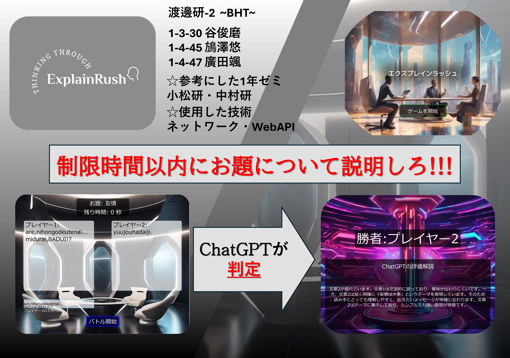
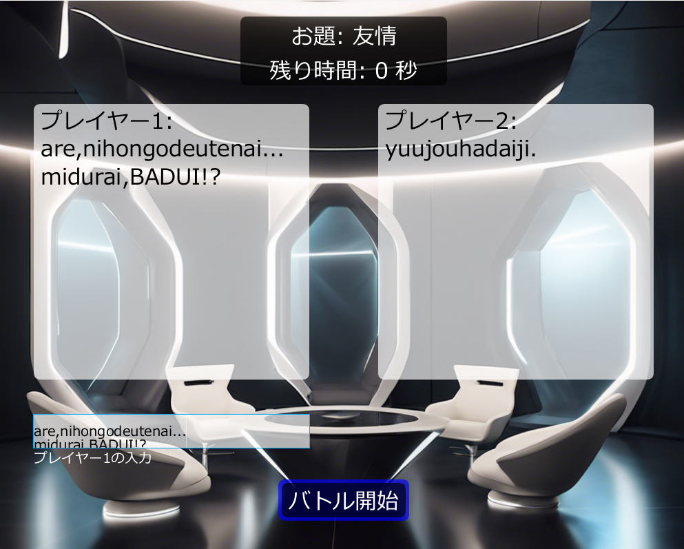
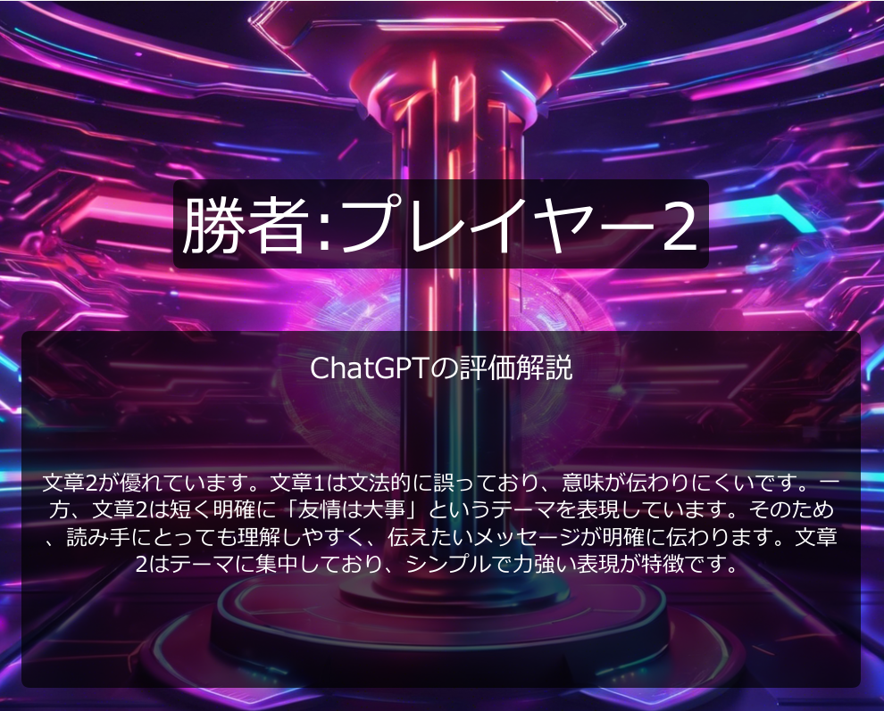

エクスプレインラッシュ
processing
2025/01/20
2人のプレイヤーは、「ある同じお題」(例:太陽、愛)に対して、50秒間その後の意味や説明を入力し、その精度を競い合う。判定はChatGPTが行う。
このゲームはサーバ側とクライアント側にわかれ、サーバ側が「バトル」ボタンをクリックするとゲームが開始される。
2人のプレイヤーはお題に対して各々のスペースに入力していく。ただ入力は日本語をローマ字表記にしたものしか打ち込めない。
これは1年の時経験したゼミの応用である(中村研究室 BadUI)。50秒が経過すると入力文が自動的にChatGPTに送信される。
その後、ChatGPTが説明文の優劣を判定しフィードバックする。これに基づき勝敗を決める。




YouTubeに投稿した動画
音声:音読さん 音楽:DOVA-SYNDROME ロゴ:Adobe Express
プログラム内
音楽:DOVA-SYNDROME 画像生成:Autoron